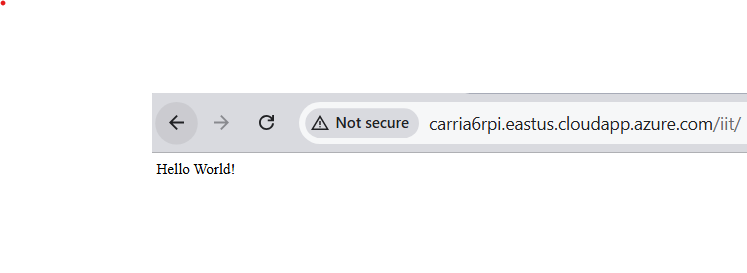
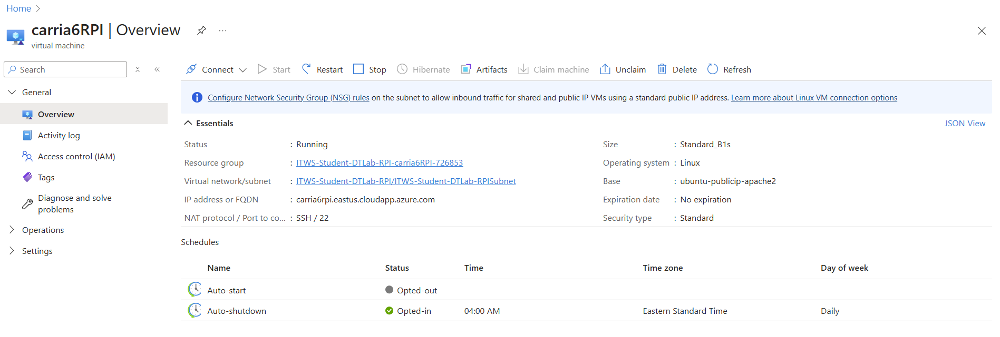
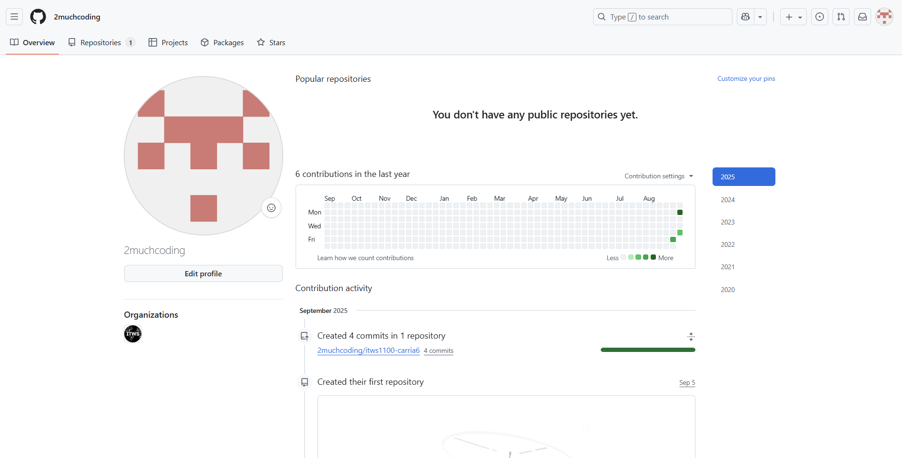
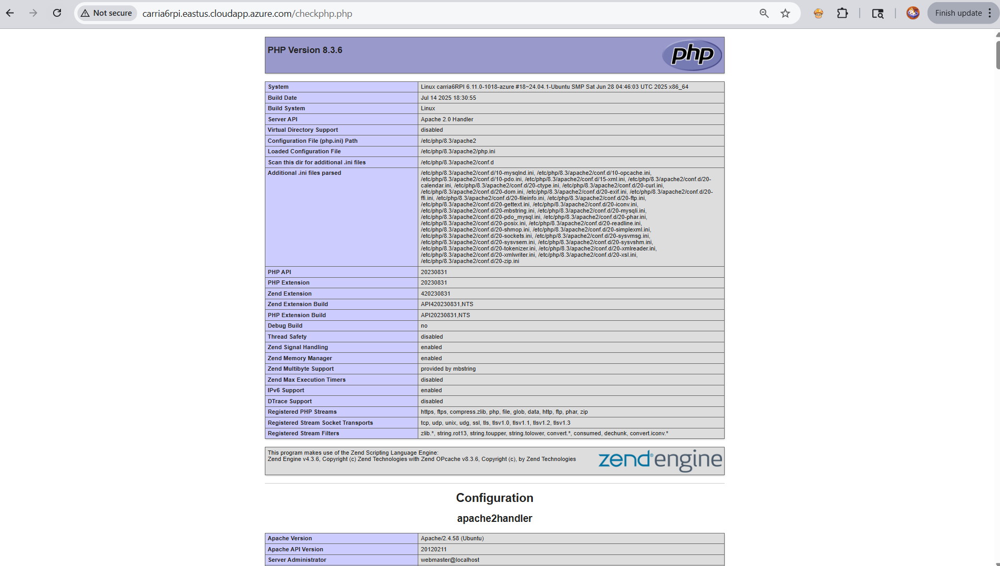

Lab Screenshots




In this lab, I set up the foundation for my personal ITWS web environment. I configured an Azure server instance and linked it with my GitHub account and local machine to create a smooth workflow for developing and deploying code. I verified that my web server was running properly, created a basic “Hello World” page, and confirmed PHP functionality with a test page. Overall, this lab established the core infrastructure I’ll use throughout the course to manage and showcase my work.



